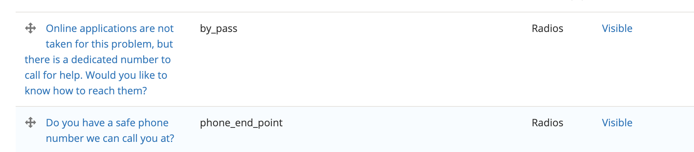

Triage rule endpoints
There are 3 supported end points in OTIS webforms:
by_pass
pro_bono_end_point
phone_end_point
These are set as the webform element’s key.
These endpoints are set via responses to Yes/No questions. When no end point is set, the user will not get routed to intake or referrals.
Note
This is the Drupal 8 approach to the loss of the ability to set values within a webform based on conditional logic. We have to set the end point in each triage rule webform or the triage will not work correctly. Because ILAO also uses webforms for other use cases, we can not set a default end point.
Standard Usage
Bypass
Bypass is used when a program wants users to call immediately versus apply online due to the emergency nature of a legal issue.
The standard question for bypass is “Online applications are not taken for this problem, but there is a dedicated number to call for help. Would you like to know how to reach them?”
When the user says yes, they are given the bypass exit screen
When the user says no, they are diverted to referrals to other organizations
In the webform, the question must have a key of “by_pass”
Pro Bono
This end point is used when a user is allowed to complete an intake application that will be routed to a pro bono attorney versus the organization’s staff. This is common in LSC-funded organizations that take cases only for referral to private attorneys.
The standard question used is “Do you want to be referred to a pro bono attorney?”
When the user says yes, they are allowed to complete an application and the notes are updated to include ” refer to pro bono” in the text.
When a user says no, they are diverted
Phone
This is the standard end point for OTIS. The standard question used is “Do you have a safe phone number we can call you at?”
When the user says yes, they are allowed to complete an online application.
When a user says no, they are diverted to other resources
Prioritization
The system checks first to see if the by_pass endpoint exists and is set. If the endpoint is exists and is either yes or no, bypass takes priority.
The system then checks to see if the pro_bono endpoint exists and is set. If the endpoint is exists and is either yes or no, pro bono takes priority. If the by_pass end point exists in the webform but is not set (meaning it was not shown to the user), pro bono end point takes priority.
Finally, the system checks for the phone_end_point. If the endpoint exists and is set, the user is triaged correctly.
If no end point is found, the webform simply submits and no referrals or intake application is processed.